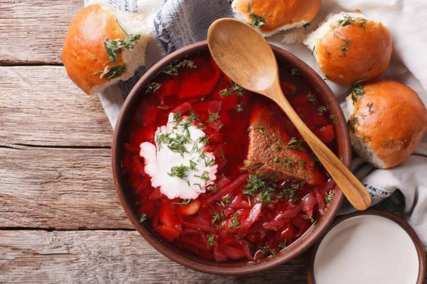
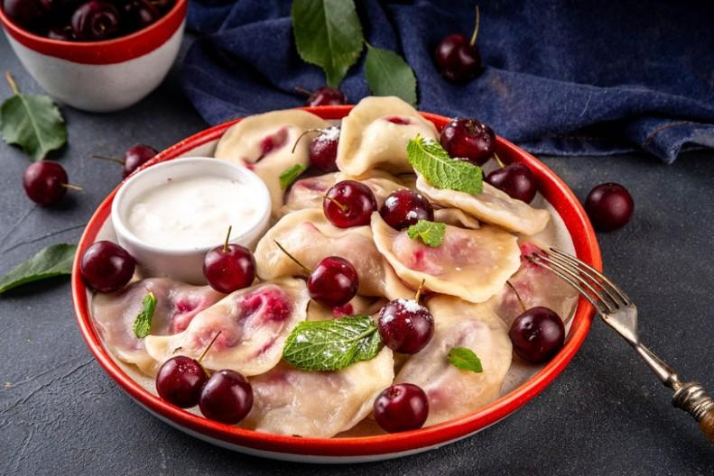
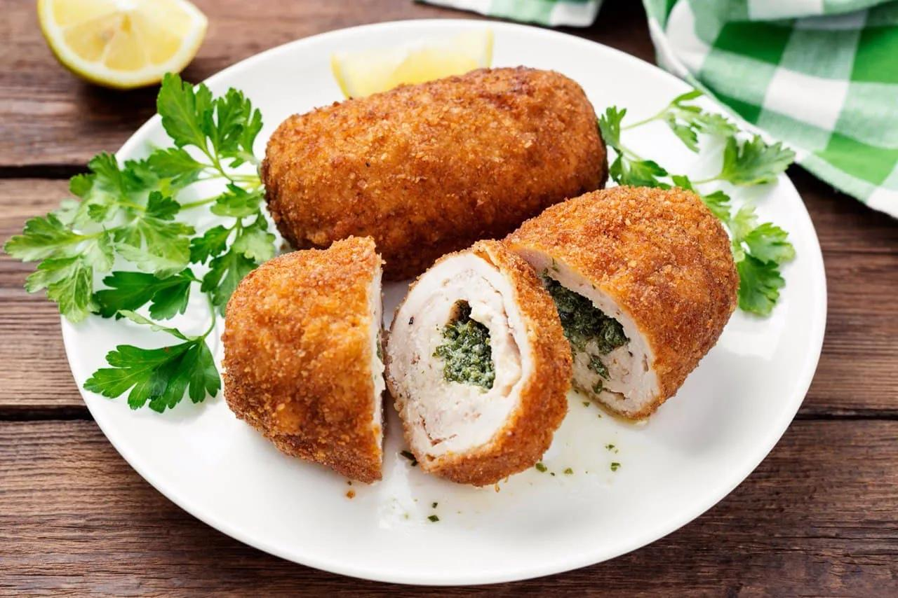
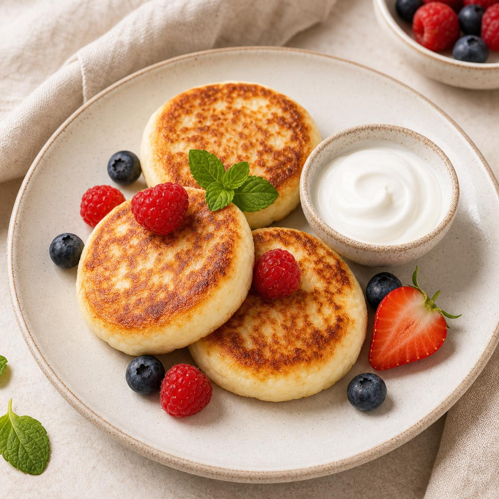

Український борщ
Традиційний борщ із пампушками.
Час приготування: 90 хв
Не знаєте, що приготувати? Отримайте випадкову ідею для смачної страви!
Смак української кухні
Готуйте з любов'ю: від традиційних українських страв до швидких ідей для щоденного меню.
Переглянути рецептиОбирайте страву та відкривайте нові смаки.

Традиційний борщ із пампушками.
Час приготування: 90 хв

Ніжне тісто та соковита вишнева начинка.
Час приготування: 60 хв

Соковита куряча котлета з маслом.
Час приготування: 50 хв

Ніжні сирники зі сметаною та ягодами.
Час приготування: 25 хв
На жаль, за вашим запитом рецептів не знайдено.
Ароматна українська страва з буряком, капустою, овочами та насиченим бульйоном.
Варіть бульйон на невеликому вогні, щоб він залишався прозорим.
Дайте тісту відпочити перед формуванням вареників.
Зберігайте готові страви в чистих закритих контейнерах у холодильнику.